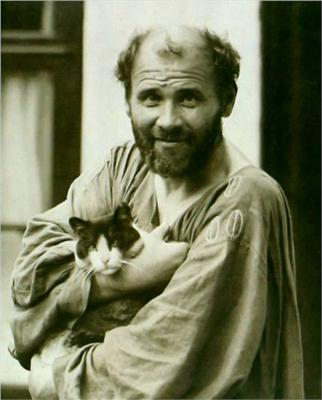

Gustav Klimt, (born July 14, 1862, Vienna, Austria—died February 6, 1918, Vienna), Austrian painter, founder of the school of painting known as the Vienna Sezession.
After studying at the Vienna School of Decorative Arts, Klimt in 1883 opened an independent studio specializing in the execution of mural paintings.
Gustav Klimt
Post-Impressionist Artist

Biography
Gustav Klimt, (born July 14, 1862, Vienna, Austria—died February 6, 1918, Vienna), Austrian painter, founder of the school of painting known as the Vienna Sezession.
After studying at the Vienna School of Decorative Arts, Klimt in 1883 opened an independent studio specializing in the execution of mural paintings. His early work had a classical style that was typical of late 19th-century academic painting, as can be seen in his murals for the Vienna Burgtheater (1888) and on the staircase of the Kunsthistorisches Museum.
In 1897 Klimt’s mature style emerged, and he founded the Vienna Sezession, a group of painters who revolted against academic art in favour of a highly decorative style similar to Art Nouveau. Soon thereafter he painted three allegorical murals for the ceiling of the University of Vienna auditorium that were violently criticized; the erotic symbolism and pessimism of these works created such a scandal that the murals were rejected.
His later murals, the Beethoven Frieze (1902) and the murals (1909–11) in the dining room of the Stoclet House in Brussels, are characterized by precisely linear drawing and the bold and arbitrary use of flat, decorative patterns of colour and gold leaf.
Klimt’s most successful works include The Kiss (1908–09) and a series of portraits of fashionable Viennese matrons, such as Fritza Riedler (1906) and Adele Bloch-Bauer I (1907).
In these works he treats the human figure without shadow and heightens the lush sensuality of skin by surrounding it with areas of flat, highly ornamental, brilliantly composed areas of decoration.
Learn more about Gustav Klimt“Der Zeit ihre Kunst, der Kunst ihre Freiheit.
Gallery
"Die Sonnenblume"
Klimt, Gustav 1862-1918

Adele Bloch-Bauer I
Gustav Klimt (1862–1918).
Unterach am Attersee
Klimt, Gustav 1862-1918
Bauerngarten mit Sonnenblumen
Klimt, Gustav 1862-1918
The Kiss
Klimt, Gustav 1907 and 1908